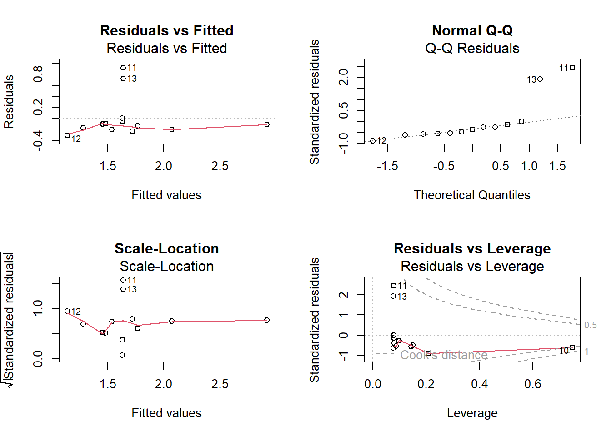
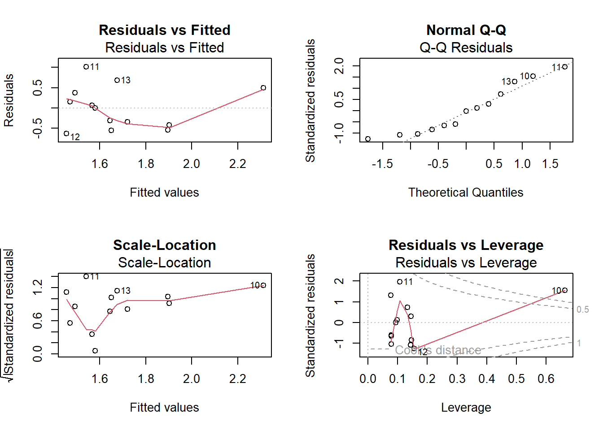
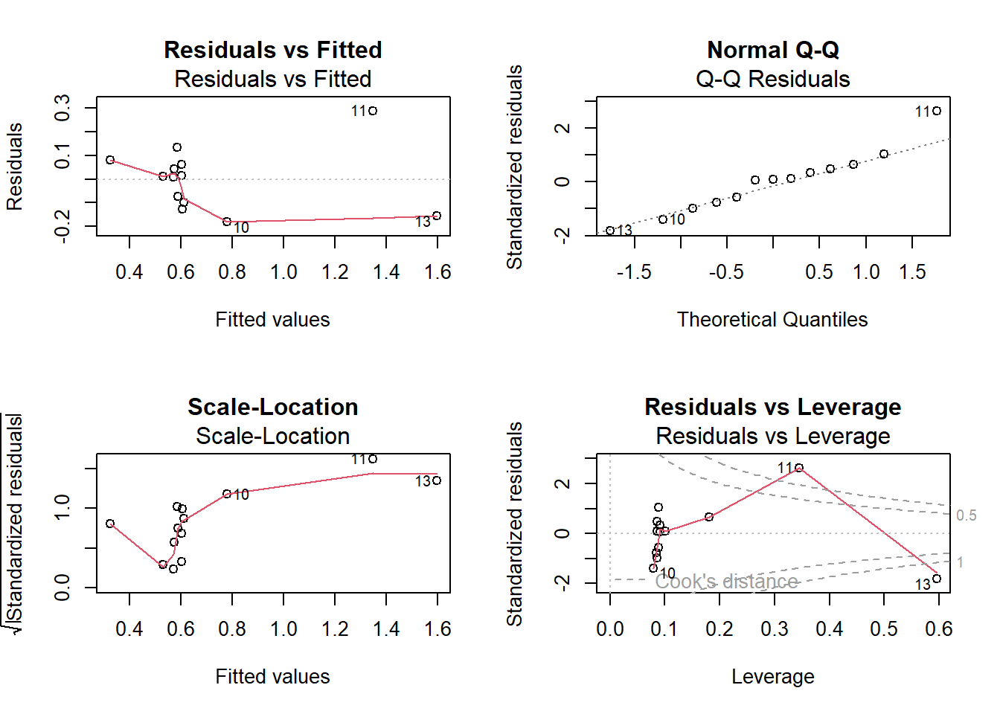
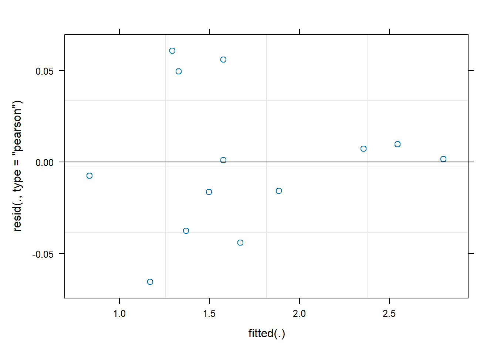
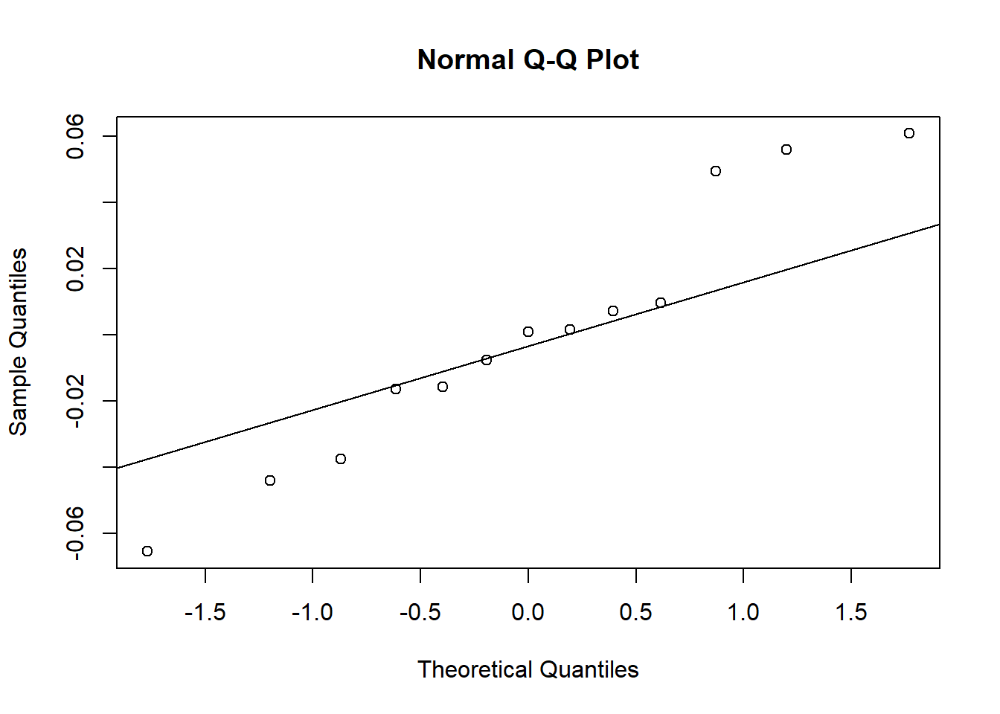
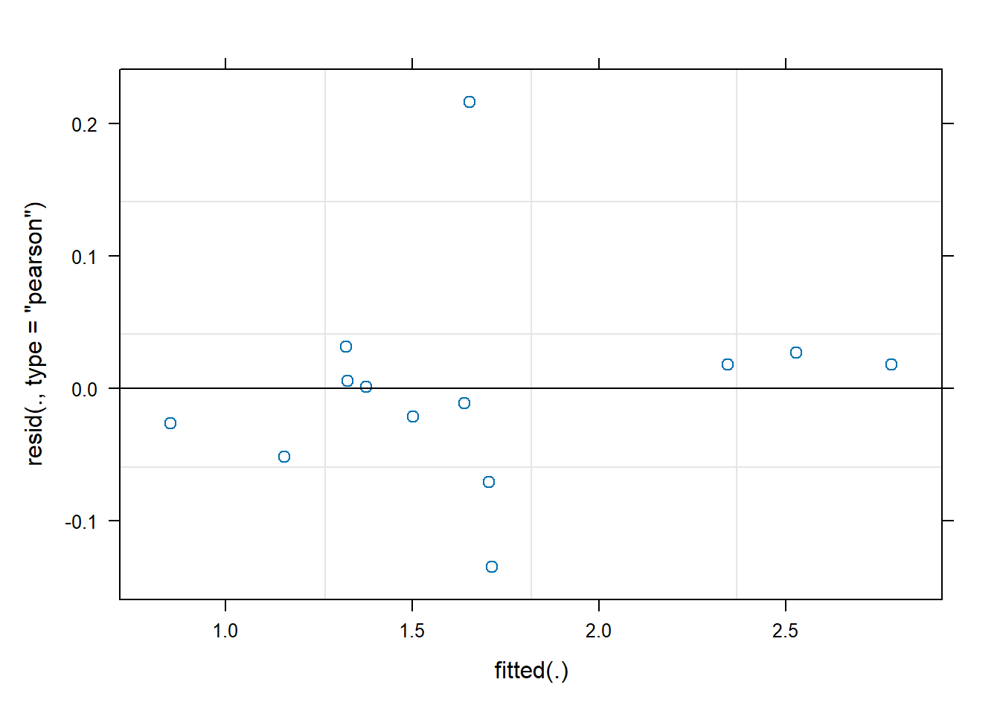
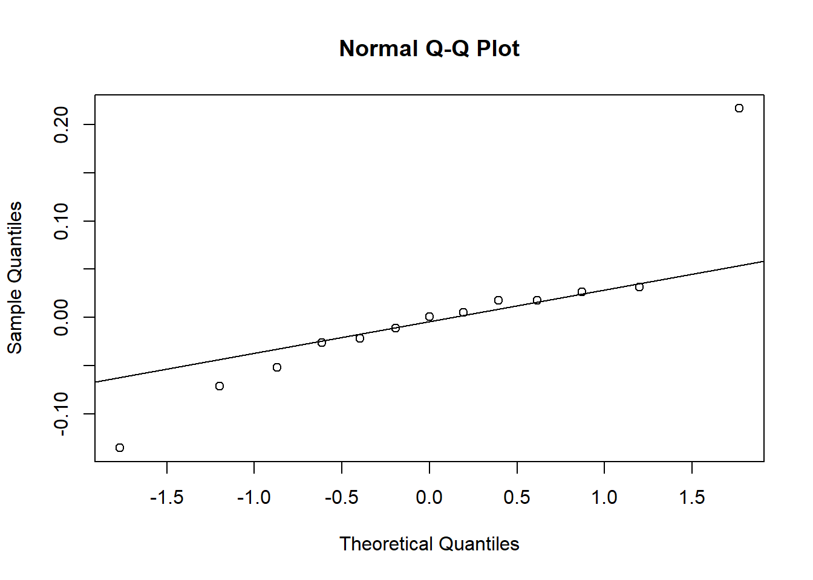
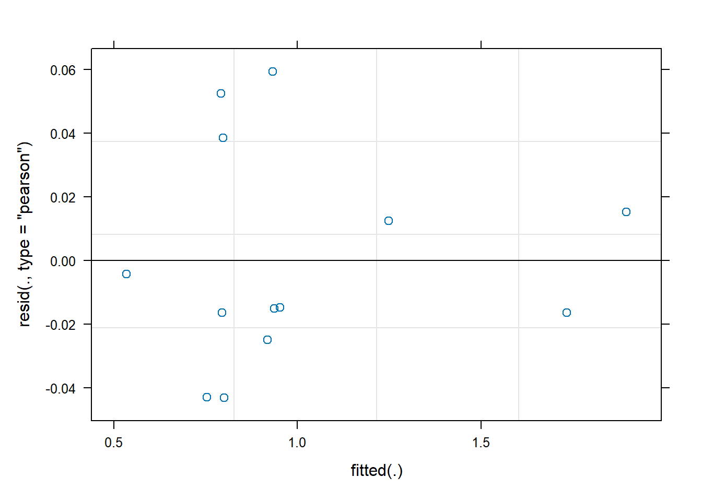
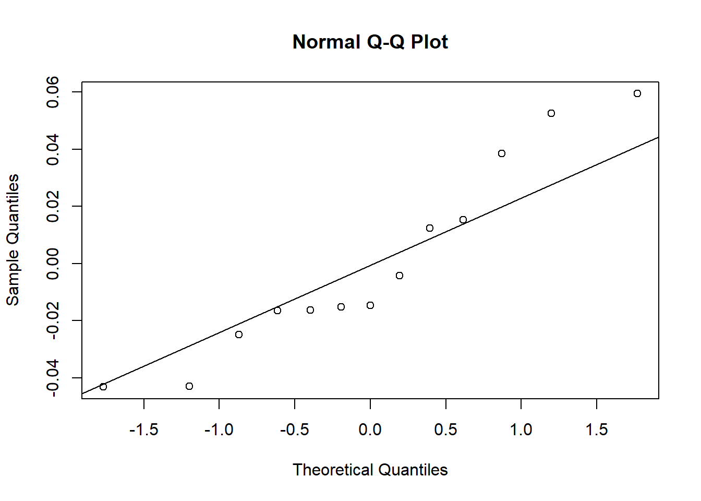
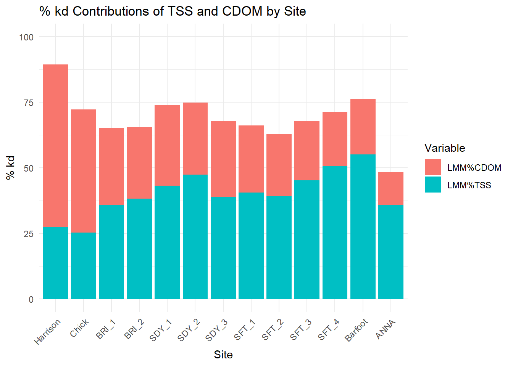

library(tidyverse)
library(kableExtra)
library(ggplot2)
library(car)
library(patchwork)
library(dplyr)
library(gridExtra)
library(tidyr)
library(readxl)ThesisLMM
allthesis <- read_excel("C:/Users/barne/Downloads/ThesisRData.xlsx", sheet = 1)
allthesis <- allthesis |>
mutate(TSS = as.numeric(TSS))avgthesis <- allthesis |>
group_by(Site, Lake) |> # Include Lake as a grouping variable
summarise(across(where(is.numeric), mean, na.rm = TRUE), .groups = "drop")Basic LM Models
# Function to get regression statistics (equation, R2, p-value, SE)
get_regression_stats <- function(x, y) {
model <- lm(y ~ x)
eq <- paste("y = ", round(coef(model)[2], 2), "x + ", round(coef(model)[1], 2), sep = "")
rsq <- paste("R² = ", round(summary(model)$r.squared, 3), sep = "")
pval <- paste("p = ", round(summary(model)$coefficients[2, 4], 3), sep = "")
se <- paste("SE = ", round(summary(model)$coefficients[2, 2], 3), sep = "") # Extract SE
return(list(eq = eq, rsq = rsq, pval = pval, se = se))
}
reg_stats_p1 <- get_regression_stats(avgthesis$TSS, avgthesis$kd)
reg_stats_p2 <- get_regression_stats(avgthesis$CHLa, avgthesis$kd)# TSS vs kd
p1 <- ggplot(avgthesis, aes(x = TSS, y = kd)) +
geom_point(color = "gray70") +
geom_smooth(method = "lm", color = "black", se = FALSE) +
labs(title = "kd vs TSS", x = "TSS (mg L⁻¹)", y = "kd (m⁻¹)") +
geom_text(x = max(avgthesis$TSS), y = max(avgthesis$kd),
label = paste(reg_stats_p1$eq, "\n", reg_stats_p1$rsq, "\n", reg_stats_p1$pval, "\n", reg_stats_p1$se),
hjust = 1, vjust = 2, size = 2, color = "black") +
theme_minimal() +
theme(
plot.title = element_text(size = 7, color = "black"),
axis.title.x = element_text(size = 6, color = "black"),
axis.title.y = element_text(size = 6, color = "black"))# CHLa vs kd
p2 <- ggplot(avgthesis, aes(x = CHLa, y = kd)) +
geom_point(color = "gray70") +
geom_smooth(method = "lm", color = "black", se = FALSE) +
labs(title = "kd vs CHLa", x = "CHLa (ug L⁻¹)", y = "kd (m⁻¹)") +
geom_text(x = max(avgthesis$CHLa), y = max(avgthesis$kd),
label = paste(reg_stats_p2$eq, "\n", reg_stats_p2$rsq, "\n", reg_stats_p2$pval, "\n", reg_stats_p2$se),
hjust = 1, vjust = 2, size = 2, color = "black") +
theme_minimal() +
theme(
plot.title = element_text(size = 7, color = "black"),
axis.title.x = element_text(size = 6, color = "black"),
axis.title.y = element_text(size = 6, color = "black"))# Calculate residual kd
avgthesis <- avgthesis |>
mutate(
Residualkd = kd - (TSS*0.20337)
)
reg_stats_p3 <- get_regression_stats(avgthesis$CDOM, avgthesis$Residualkd)# CDOM vs Residual kd
p3 <- ggplot(avgthesis, aes(x = CDOM, y = Residualkd)) +
geom_point(color = "gray70") +
geom_smooth(method = "lm", color = "black", se = FALSE) +
labs(title = "Residual kd vs CDOM", x = "CDOM (m⁻¹)", y = "Residualkd (m⁻¹)") +
geom_text(x = max(avgthesis$CDOM), y = max(avgthesis$Residualkd),
label = paste(reg_stats_p3$eq, "\n", reg_stats_p3$rsq, "\n", reg_stats_p3$pval, "\n", reg_stats_p3$se),
hjust = 1, vjust = 2, size = 2, color = "black") +
theme_minimal() +
theme(
plot.title = element_text(size = 7, color = "black"),
axis.title.x = element_text(size = 6, color = "black"),
axis.title.y = element_text(size = 6, color = "black"))grid.arrange(p1, p2, p3, ncol = 2)
p1summary <- lm(kd ~ TSS, data = avgthesis)
#summary(p1summary)
p2summary <- lm(kd ~ CHLa, data = avgthesis)
#summary(p2summary)
p3summary <- lm(Residualkd ~ CDOM, data = avgthesis)
#summary(p3summary)# Function to create diagnostic plots for each model
create_diagnostic_plots <- function(model) {
par(mfrow = c(2, 2))
# Residuals vs Fitted plot
plot(model, which = 1, main = "Residuals vs Fitted")
# Normal Q-Q plot
plot(model, which = 2, main = "Normal Q-Q")
# Scale-Location plot
plot(model, which = 3, main = "Scale-Location")
# Residuals vs Leverage plot
plot(model, which = 5, main = "Residuals vs Leverage")
}create_diagnostic_plots(p1summary)
create_diagnostic_plots(p2summary)
create_diagnostic_plots(p3summary)
PercentContributions <- avgthesis |>
mutate(
`%TSS` = ((TSS*0.20337)/kd)*100,
`%CDOM` = ((CDOM*0.17382)/kd)*100) |>
summarize(`Site`, `%TSS`, `%CDOM`)# Pivot the data into long format for ggplot
PercentContributions_long <- PercentContributions |>
pivot_longer(cols = c(`%TSS`, `%CDOM`),
names_to = "Variable",
values_to = "PercentContribution")
# Manually recoding the 'Site' variable
PercentContributions_long <- PercentContributions_long |>
mutate(
Site = dplyr::recode(Site,
"2-BRI010.78" = "BRI_1",
"2-BRI013.12" = "BRI_2",
"5ANTW127.14" = "Barfoot",
"Chickahominy" = "Chick",
"Harrison" = "Harrison",
"2-SDY004.27" = "SDY_1",
"2-SDY005.85" = "SDY_2",
"2-MBN000.96" = "SDY_3",
"2-SFT031.08" = "SFT_1",
"2-DYC000.19" = "SFT_2",
"2-SFT033.42" = "SFT_3",
"2-SFT034.38" = "SFT_4",
"Dam Surface" = "ANNA"))
# Change the site order for plot visualization
site_order <- c( "Harrison", "Chick", "BRI_1", "BRI_2", "SDY_1", "SDY_2", "SDY_3", "SFT_1", "SFT_2", "SFT_3", "SFT_4", "Barfoot", "ANNA")
PercentContributions_long <- PercentContributions_long |>
mutate(Site = factor(Site, levels = site_order))ggplot(PercentContributions_long, aes(x = Site, y = PercentContribution, fill = Variable)) +
geom_bar(stat = "identity", position = "stack") +
labs(
title = "% kd Contributions of TSS and CDOM by Site",
x = "Site",
y = "% kd",
fill = "Variable"
) +
theme_minimal() +
theme(axis.text.x = element_text(angle = 45, hjust = 1)) 
Linear Mixed Effect Models
Here we use “Lake” as a random effect/grouping mechanism
library(lme4)
library(MuMIn)
library(lmerTest)lmm1tss <- lmer(kd ~ TSS + (1|Lake), data = avgthesis)
summary(lmm1tss)Linear mixed model fit by REML. t-tests use Satterthwaite's method [
lmerModLmerTest]
Formula: kd ~ TSS + (1 | Lake)
Data: avgthesis
REML criterion at convergence: 1.7
Scaled residuals:
Min 1Q Median 3Q Max
-1.12056 -0.27875 0.01732 0.16640 1.04395
Random effects:
Groups Name Variance Std.Dev.
Lake (Intercept) 0.2700 0.51964
Residual 0.0034 0.05831
Number of obs: 13, groups: Lake, 7
Fixed effects:
Estimate Std. Error df t value Pr(>|t|)
(Intercept) 1.13101 0.23680 9.49302 4.776 0.000867 ***
TSS 0.14229 0.02649 6.44326 5.372 0.001360 **
---
Signif. codes: 0 '***' 0.001 '**' 0.01 '*' 0.05 '.' 0.1 ' ' 1
Correlation of Fixed Effects:
(Intr)
TSS -0.553# Extract fixed effects
fixed_effects <- fixef(lmm1tss)
# Get the summary of the model
summary_lmm1tss <- summary(lmm1tss)
# Extract p-values from the 5th column of the model summary
if (ncol(summary_lmm1tss$coefficients) >= 5) {
p_values <- summary_lmm1tss$coefficients[, 5]
} else {
p_values <- NA # Assign NA if p-values are missing
}
# Extract standard errors from the 2nd column of model summary
se_values <- summary_lmm1tss$coefficients[, 2]
# Calculate the R-squared values for the mixed model
r_squared_values <- r.squaredGLMM(lmm1tss)
# Extract specific coefficients (intercept and TSS coefficient)
intercept <- fixed_effects[1]
tss_coefficient <- fixed_effects[2]
equation <- paste("y = ", round(tss_coefficient, 4), "x", " + ", round(intercept, 4), sep = "")
cat("\nThe relationship equation for LMM (kd ~ TSS) is:\n", equation, "\n")
The relationship equation for LMM (kd ~ TSS) is:
y = 0.1423x + 1.131 cat("\nP-value for: ", round(p_values[2], 4), "\n")
P-value for: 0.0014 cat("Standard Error: ", round(se_values[2], 4), "\n")Standard Error: 0.0265 cat("Marginal R-squared: ", round(r_squared_values[1], 4), "\n")Marginal R-squared: 0.2529 cat("Conditional R-squared: ", round(r_squared_values[2], 4), "\n")Conditional R-squared: 0.9907 lmm1chla <- lmer(kd ~ CHLa + (1|Lake), data = avgthesis)
summary(lmm1chla)Linear mixed model fit by REML. t-tests use Satterthwaite's method [
lmerModLmerTest]
Formula: kd ~ CHLa + (1 | Lake)
Data: avgthesis
REML criterion at convergence: 14.6
Scaled residuals:
Min 1Q Median 3Q Max
-1.12534 -0.21815 0.00778 0.14953 1.80392
Random effects:
Groups Name Variance Std.Dev.
Lake (Intercept) 0.44049 0.6637
Residual 0.01441 0.1200
Number of obs: 13, groups: Lake, 7
Fixed effects:
Estimate Std. Error df t value Pr(>|t|)
(Intercept) 1.37531 0.37026 10.94959 3.714 0.00344 **
CHLa 0.02495 0.01472 7.22666 1.696 0.13242
---
Signif. codes: 0 '***' 0.001 '**' 0.01 '*' 0.05 '.' 0.1 ' ' 1
Correlation of Fixed Effects:
(Intr)
CHLa -0.728# Extract fixed effects from the model
fixed_effects_chla <- fixef(lmm1chla)
# Get the summary of the model
summary_lmm1chla <- summary(lmm1chla)
# Extract p-values from the 5th column of the model summary
p_values_chla <- summary_lmm1chla$coefficients[, 5]
# Extract standard errors from the 2nd column of the model summary
se_values_chla <- summary_lmm1chla$coefficients[, 2]
# Calculate the R-squared values for the mixed model
r_squared_values_chla <- r.squaredGLMM(lmm1chla)
# Extract specific coefficients (intercept and CHLa coefficient)
intercept_chla <- fixed_effects_chla[1]
chla_coefficient <- fixed_effects_chla[2]
equation_chla <- paste("y = ", round(chla_coefficient, 4), "x", " + ", round(intercept_chla, 4), sep = "")
cat("\nThe relationship equation for LMM (kd ~ CHLa) is:\n", equation_chla, "\n")
The relationship equation for LMM (kd ~ CHLa) is:
y = 0.025x + 1.3753 cat("\nP-value for: ", round(p_values_chla[2], 4), "\n")
P-value for: 0.1324 cat("Standard Error: ", round(se_values_chla[2], 4), "\n")Standard Error: 0.0147 cat("Marginal R-squared: ", round(r_squared_values_chla[1], 4), "\n")Marginal R-squared: 0.0537 cat("Conditional R-squared: ", round(r_squared_values_chla[2], 4), "\n")Conditional R-squared: 0.97 # Calculate LMM residual kd
avgthesis <- avgthesis |>
mutate(
LMMResidualkd = kd - (TSS*0.14229)
)lmm1cdom <- lmer(LMMResidualkd ~ CDOM + (1|Lake), data = avgthesis)
summary(lmm1cdom)Linear mixed model fit by REML. t-tests use Satterthwaite's method [
lmerModLmerTest]
Formula: LMMResidualkd ~ CDOM + (1 | Lake)
Data: avgthesis
REML criterion at convergence: -14.1
Scaled residuals:
Min 1Q Median 3Q Max
-0.9282 -0.3540 -0.3168 0.3277 1.2763
Random effects:
Groups Name Variance Std.Dev.
Lake (Intercept) 0.029402 0.17147
Residual 0.002168 0.04656
Number of obs: 13, groups: Lake, 7
Fixed effects:
Estimate Std. Error df t value Pr(>|t|)
(Intercept) 0.48752 0.11342 4.95216 4.298 0.007897 **
CDOM 0.18625 0.02678 5.16486 6.954 0.000828 ***
---
Signif. codes: 0 '***' 0.001 '**' 0.01 '*' 0.05 '.' 0.1 ' ' 1
Correlation of Fixed Effects:
(Intr)
CDOM -0.810# Extract fixed effects from the model
fixed_effects_residual <- fixef(lmm1cdom)
# Get the summary of the model
summary_lmm1cdom <- summary(lmm1cdom)
# Extract p-values from the 5th column of the model summary
p_values_residual <- summary_lmm1cdom$coefficients[, 5]
# Extract standard errors from the 2nd column of the model summary
se_values_residual <- summary_lmm1cdom$coefficients[, 2]
# Calculate the R-squared values for the mixed model
r_squared_values_residual <- r.squaredGLMM(lmm1cdom)
# Extract specific coefficients (intercept and CDOM coefficient)
intercept_residual <- fixed_effects_residual[1]
cdom_coefficient <- fixed_effects_residual[2]
# Create the equation for the model
equation_residual <- paste("y = ", round(cdom_coefficient, 4), "x", " + ", round(intercept_residual, 4), sep = "")
cat("\nThe relationship equation for LMM (Residualkd ~ CDOM) is:\n", equation_residual, "\n")
The relationship equation for LMM (Residualkd ~ CDOM) is:
y = 0.1862x + 0.4875 cat("\nP-value for: ", round(p_values_residual[2], 4), "\n")
P-value for: 8e-04 cat("Standard Error: ", round(se_values_residual[2], 4), "\n")Standard Error: 0.0268 cat("Marginal R-squared: ", round(r_squared_values_residual[1], 4), "\n")Marginal R-squared: 0.8188 cat("Conditional R-squared: ", round(r_squared_values_residual[2], 4), "\n")Conditional R-squared: 0.9876 LMMPercentContributions <- avgthesis |>
mutate(
`LMM%TSS` = ((TSS*0.1423)/kd)*100,
`LMM%CDOM` = ((CDOM*0.1862)/kd)*100) |>
summarize(`Site`, `LMM%TSS`, `LMM%CDOM`)
head(LMMPercentContributions)# A tibble: 6 × 3
Site `LMM%TSS` `LMM%CDOM`
<chr> <dbl> <dbl>
1 2-BRI010.78 35.7 29.5
2 2-BRI013.12 38.2 27.4
3 2-DYC000.19 39.2 23.5
4 2-MBN000.96 38.7 29.2
5 2-SDY004.27 43.1 30.9
6 2-SDY005.85 47.4 27.4plot(lmm1tss)
qqnorm(resid(lmm1tss))
qqline(resid(lmm1tss))
plot(lmm1chla)
qqnorm(resid(lmm1chla))
qqline(resid(lmm1chla))
plot(lmm1cdom)
qqnorm(resid(lmm1cdom))
qqline(resid(lmm1cdom))
# Pivot the data into long format for ggplot
LMMPercentContributions_Long <- LMMPercentContributions |>
pivot_longer(cols = c(`LMM%TSS`, `LMM%CDOM`),
names_to = "Variable",
values_to = "PercentContribution")
# Manually recoding the 'Site' variable
LMMPercentContributions_Long <- LMMPercentContributions_Long |>
mutate(
Site = dplyr::recode(Site,
"2-BRI010.78" = "BRI_1",
"2-BRI013.12" = "BRI_2",
"5ANTW127.14" = "Barfoot",
"Chickahominy" = "Chick",
"Harrison" = "Harrison",
"2-SDY004.27" = "SDY_1",
"2-SDY005.85" = "SDY_2",
"2-MBN000.96" = "SDY_3",
"2-SFT031.08" = "SFT_1",
"2-DYC000.19" = "SFT_2",
"2-SFT033.42" = "SFT_3",
"2-SFT034.38" = "SFT_4",
"Dam Surface" = "ANNA"))
# Change the site order for plot visualization
site_order <- c( "Harrison", "Chick", "BRI_1", "BRI_2", "SDY_1", "SDY_2", "SDY_3", "SFT_1", "SFT_2", "SFT_3", "SFT_4", "Barfoot", "ANNA")
LMMPercentContributions_Long <- LMMPercentContributions_Long |>
mutate(Site = factor(Site, levels = site_order))ggplot(LMMPercentContributions_Long, aes(x = Site, y = PercentContribution, fill = Variable)) +
geom_bar(stat = "identity", position = "stack") +
labs(
title = "% kd Contributions of TSS and CDOM by Site",
x = "Site",
y = "% kd",
fill = "Variable"
) +
theme_minimal() +
theme(axis.text.x = element_text(angle = 45, hjust = 1)) +
scale_y_continuous(limits = c(0, 100))
Comparison of Models
# Comparison of kd/tss lm and lmer models
AIC(p1summary, lmm1tss) df AIC
p1summary 3 16.378917
lmm1tss 4 9.697986# Comparison of residualkd/cdom lm and lmer models
AIC(p3summary, lmm1cdom) df AIC
p3summary 3 -11.326528
lmm1cdom 4 -6.072013This indicates that the basic linear model is a better fit than the linear mixed effect model. Since the residual kd for the lmer was based on the lmer tss model, could it be that the random effects of lakes are already taken into account?
i.e. would it be better to do a lmer for kd vs tss then do a regular lm for residual kd vs cdom? This way we arent accounting for random effects twice?